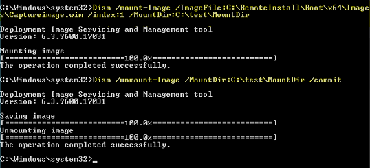

Win 2012 R2 WDS Fix – 0XC000000F – required file is missing or contains errors (winload.exe) | JulianBen.com
Screenshot (image not restored from the original import)
Windows 2012 R2 currently halts with an error (0XC000000F) when the Windows Deployment Server attempts to Capture an Image. Run the below commands to mount the capture wim file and then unmount. This work around will allow WDS to run and capture the image
Screenshot (image not restored from the original import)
Windows 2012 R2 currently halts with an error (0XC000000F) when the Windows Deployment Server attempts to Capture an Image. Run the below commands to mount the capture wim file and then unmount. This work around will allow WDS to run and capture the image
Dism /mount-Image /ImageFile:C:\RemoteInstall\Boot\x64\Images\Captureimage.wim /index:1 /MountDir:C:\test\MountDir
Dism /unmount-Image /MountDir:C:\test\MountDir /commit
Restart wds service in wds console
